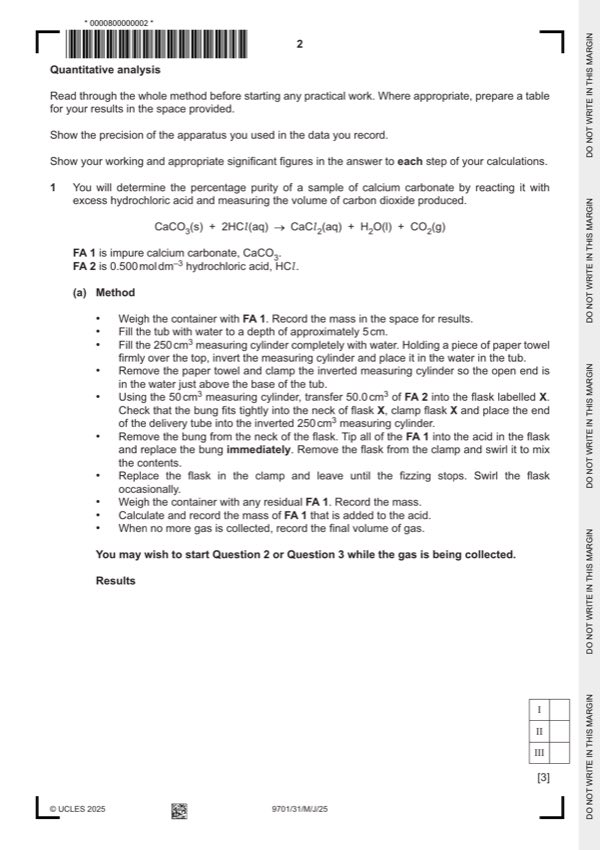
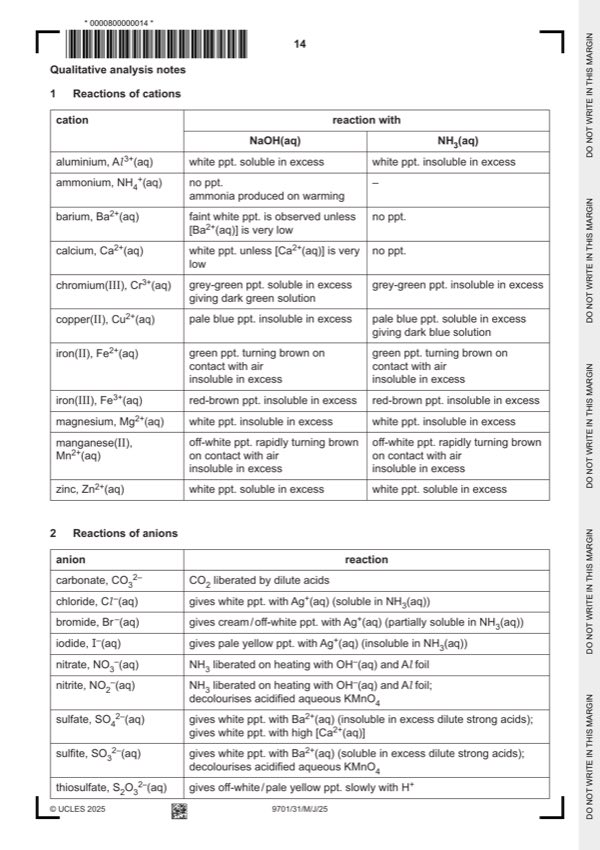

Question 1

Original paper page 2

Original paper page 14
Part 1(a) — solution
Answer: AND · AND
- (mass of) container with FA 1 / solid
- (mass of) container (+ residual FA 1 / solid)
- (mass of) FA 1
- (volume of) gas / CO2 (produced)
Mark points
- (mass of) container with FA 1 / solid
- (mass of) container (+ residual FA 1 / solid)
- (mass of) FA 1
- (volume of) gas / CO2 (produced)
Part 1(b)(i) — solution
Answer: AND · AND
- (amount of CO2 =) volume of gas collected / 24000 mol
- amount of CaCO3 = amount of CO2
Mark points
- (amount of CO2 =) volume of gas collected / 24000 mol
- amount of CaCO3 = amount of CO2
Part 1(b)(ii) — solution
Answer: AND
- % purity = [(b)(i) x 100.1/mass of FA 1] 100
Mark points
- % purity = [(b)(i) x 100.1/mass of FA 1] 100
Part 1(c) — solution
Answer: AND · AND
- [M1] the bottom box is ticked 2
- [M2] more gas escapes (before the bung is replaced)
Mark points
- [M1] the bottom box is ticked 2
- [M2] more gas escapes (before the bung is replaced)
Part 1(d)(i) — solution
- unreacted solid / FA 1 / CaCO3 remains in the (conical) flask (after bubbling stops)
- not all the solid / FA 1 has reacted / disappeared (at end of reaction)
Mark points
- unreacted solid / FA 1 / CaCO3 remains in the (conical) flask (after bubbling stops)
- not all the solid / FA 1 has reacted / disappeared (at end of reaction)
Part 1(d)(ii) — solution
- [M1] volume of gas collected is less
- [M2] so amount / moles / mass of calcium carbonate (calculated) is lower
Mark points
- [M1] volume of gas collected is less
- [M2] so amount / moles / mass of calcium carbonate (calculated) is lower